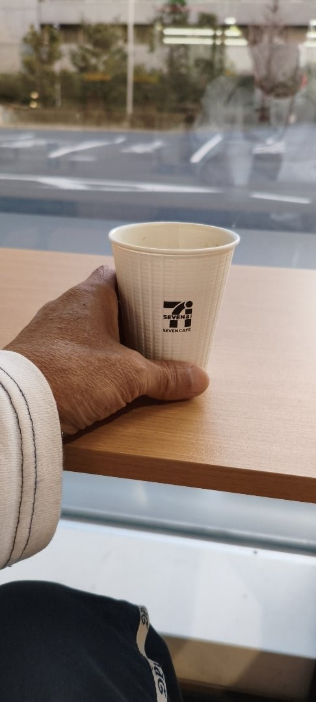
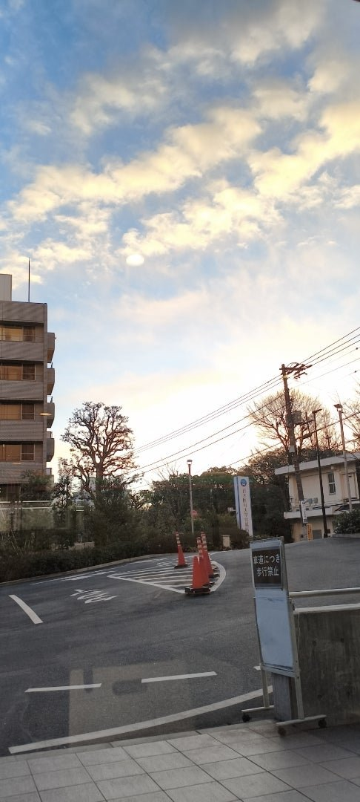
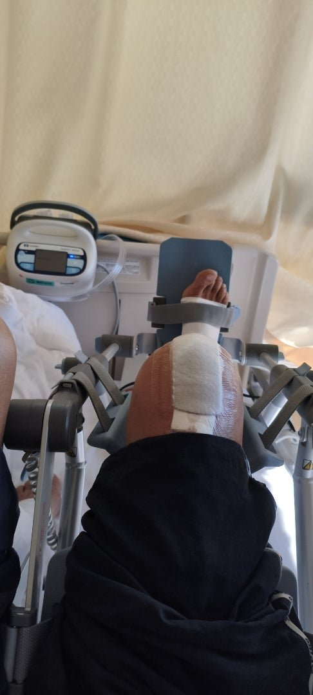
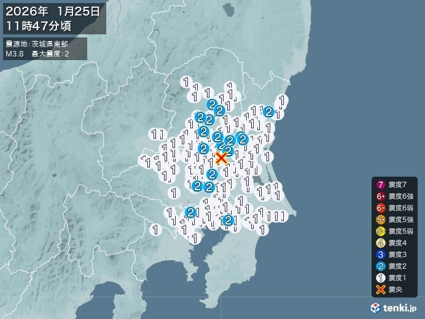
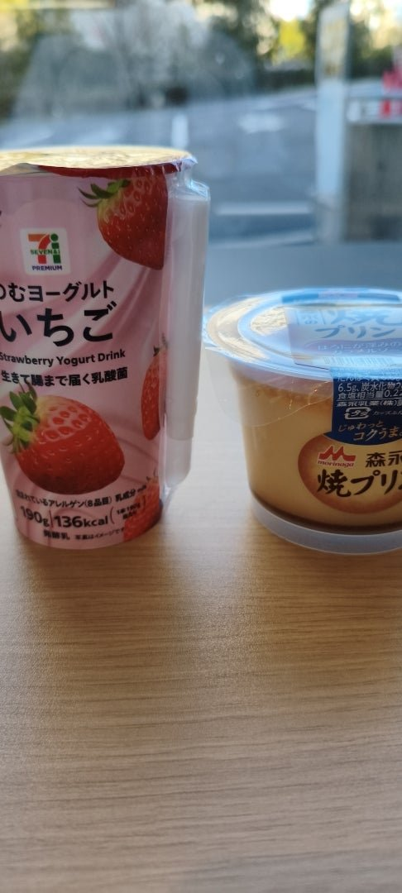
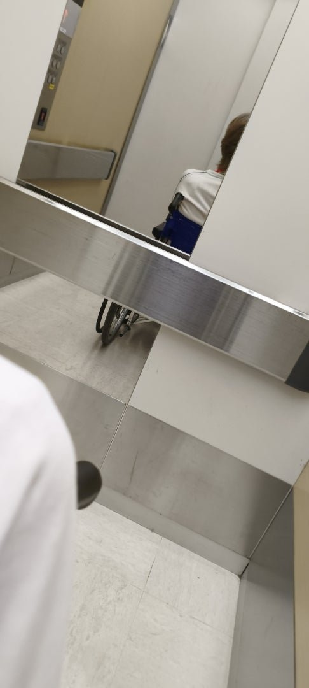

人工関節手術 入院5日目 リハビリ開始4日目
モーニングコーヒー☕️
車椅子でのトイレは昨日まで
今日の日中からは歩行器による訓練です。
歩行器は赤ちゃんの時以来かな❓️
これでは新館の一階にあるセブンイレブンまではとても行けそうな気がしません。
ノロノロ運転お許しください。
持ち上がらない
曲がらない
伸ばせない右ひざを何とか立って重心をかけながら歩くというのは至難の業です。

体重をかけるとグラグラして定まらないし歩行器が無ければ倒れるのは確実だ。
果たしてこのような状態で
10日後に退院して1人で
羽田に行けるのか？
とても不安だ。
キャスターバッグ引きずって
バックパック背負って
杖を付いて歩くの全く想像つかない。
車の運転は多分大丈夫だと思う。
足首から先は自由に動かせるし
アクセルやブレーキの加減も出来そうである。
島でも暫く車椅子生活なのかな❓️
杖歩行は手摺につかまらないと無理だと思う。
数日で劇的にこの症状が改善されれば別だけど、3日経っても自分の意思で動かない右足に悔しさを感じる。
明日はもう少し動くようになるのかな？
リハビリ次第なのかな❓️
午前10時から膝の曲げ伸ばし運動を行う。
1時間機械に身を委ねて横になる。
初日は50度昨日は60度本日は70度と日増しに角度が上がっていく。

自力では足を自由に動かせないので、機械で強制的にやってもらうのもありがたいです😊🎵
4日振りに髪の毛洗いたいし昨日お願いしてあった体拭きもまだなので今日はサッパリしたい気分です😊
髪の毛洗えました。５日ぶりです。歩行訓練のあと身体も拭きました。
背中の方だけ看護師さんがゴシゴシ拭いてくれました。小股も拭けました。
サッパリですシャワーはまだ傷が付いてから。
歩行訓練では新館への連絡通路まで行き、上り下りを体験して帰ってきました。看護師さんが付き添ってくれていたので安心感が有りました。機械で曲げ伸ばし運動歩行訓練身体拭きシャンプー
今日は色々やりましたね。

途中揺れたりしてビックリした。

そしてセブンイレブン２回目

タンパク質とビタミン摂取しました。
機械と歩行器で訓練写真は撮れません看護師さんが付いていてくれて安心です。
明日はリハビリセンターでの指導があるとのことです。
晩ご飯は煮込みハンバーグ
美味しかったです。

※ この記事はアメブロからの移行記事です（原文はこちら）